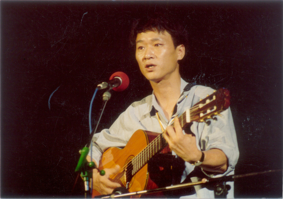
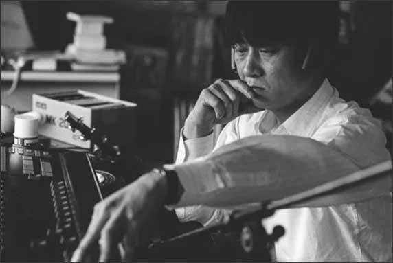
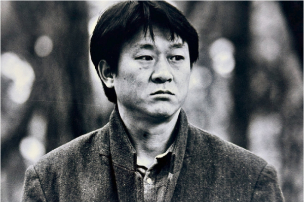
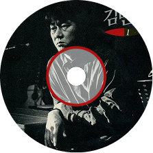
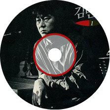

1970, 한국
김민기는 음악가라기보다, 시대를 직시한 기록자였다.
그는 1970년대 초, 대학가요의 시작을 연 상징적인 인물이며,
‘아침이슬’, ‘상록수’, ‘친구’ 같은 노래들로 민중과 청년의 목소리를 대변했다.
그의 음악은 화려하지 않았다.
그러나 낮고 거친 목소리는 진심으로 울렸고, 정제되지 않은 멜로디는 오히려 더 깊은 울림을 줬다.
그는 시대의 아픔을 외면하지 않았고, 권력의 검열에도 침묵하지 않았다.
그래서 그의 노래는 오래도록 금지되었고, 그 자신도 오랫동안 무대에서 퇴출당했다.
그러나 그는 노래를 멈추지 않았다.
그는 무대 뒤 연출가로, 극작가로, 그리고 이 땅의 청춘을 기억하는 사람으로 남았다.
김민기는 단지 ‘가수’가 아니라, ‘기억’과 ‘저항’의 이름이었다.
그는 노래했고, 시대는 그를 지웠지만
사람들은 결코 그의 목소리를 잊지 않았다.
‘친구’는 단순한 우정의 노래가 아니다.
이 노래는, 억압된 시대를 함께 살아낸 청춘들이
서로를 의지하며 버텨낸 시간에 대한 이야기였다.
권위주의 정권 아래에서, ‘연대’는 가장 경계해야 할 감정이었다.
친구와 손잡는 일, 함께 걷는 일, 슬픔을 나누는 일... 그런 모든 것이 ‘체제에 위협’이 되었다.
그래서 ‘친구’는 검열에 걸렸다.
그 어떤 정치적 구호도 없었지만, 그 어떤 이념도 노래하지 않았지만,
단지 서로를 부르는 그 마음이 정권에겐 불편한 노랫말이 되었다.
친구가 있다는 사실, 그리고 그 친구가 ‘함께 울어줄 사람’이라는 믿음은
그 시절엔 불온했지만, 동시에 너무나 절실한 진실이었다.
그래서 이 노래는 금지되었고,
동시에 오래도록 기억되었다.
검열은 가사를 지울 수 있지만,
노래를 함께 불렀던 기억은 지우지 못한다.

검푸른 바닷가에 비가 내리면
어디가 하늘이고 어디가 물이요
그 깊은 바다 속에 고요히 잠기면
무엇이 산 것이고 무엇이 죽었소
눈 앞에 떠오는 친구의 모습
흩날리는 꽃잎 위에 어른거리오
저 멀리 들리는 친구의 음성
달리는 기차바퀴가 대답하려나
눈 앞에 보이는 수많은 모습들
그 모두 진정이라 우겨 말하면
어느 누구 하나가 홀로 일어나
아니라고 말할 사람 누가 있겠소
눈 앞에 떠오는 친구의 모습
흩날리는 꽃잎 위에 어른거리오
저 멀리 들리는 친구의 음성
달리는 기차바퀴가 대답하려나



 
